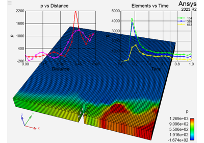

Examples#
These examples show how the PyEnSight interfaces work and demonstrate postprocessing workflows leveraging these interfaces.
Basic examples#
These basic examples use the PyEnSight API to produce simple scenes.

Renderables
Intermediate examples#
These intermediate examples use the PyEnSight API for more complex workflows that employ calculator functions, queries, viewports, and annotations.
Design point comparison

Queries
EnSight Utilities
Advanced examples#
These advanced examples use more sophisticated features of the PyEnSight API, including events, parallelism, direct data access, and techniques that improve performance.
Asynchronous event support
Remote Function Execution